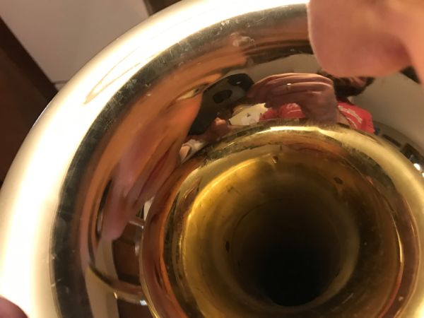

Welcome!
Ben's Trombone Page
Click on the images and see what happens!

Trombone (n.) from Italian tromba 'trumpet'. The trombone was thought to be a type of trumpet.
Fun fact: The adult voices in Charlie Brown are sound effect made by a trombone.
Fun fact: The trombone is said to be the voice of god when he is not happy.
Fun fact: Wonder what was the first gig to use the trombone? A wedding!
Ben enjoys the trombone for:
the quality of the bass sound
preferring to play root harmony more than melody in ensembles
the challenge of changing positions of the slide to create different sounds
